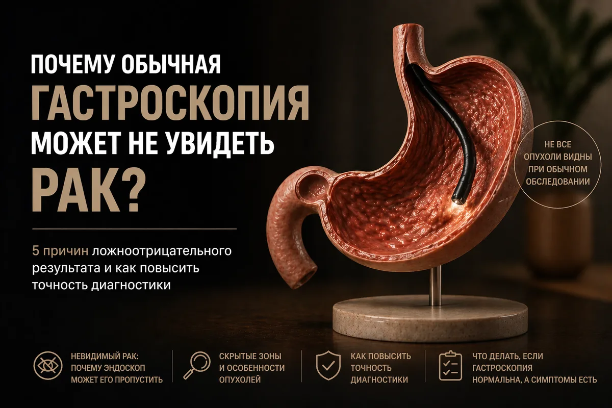
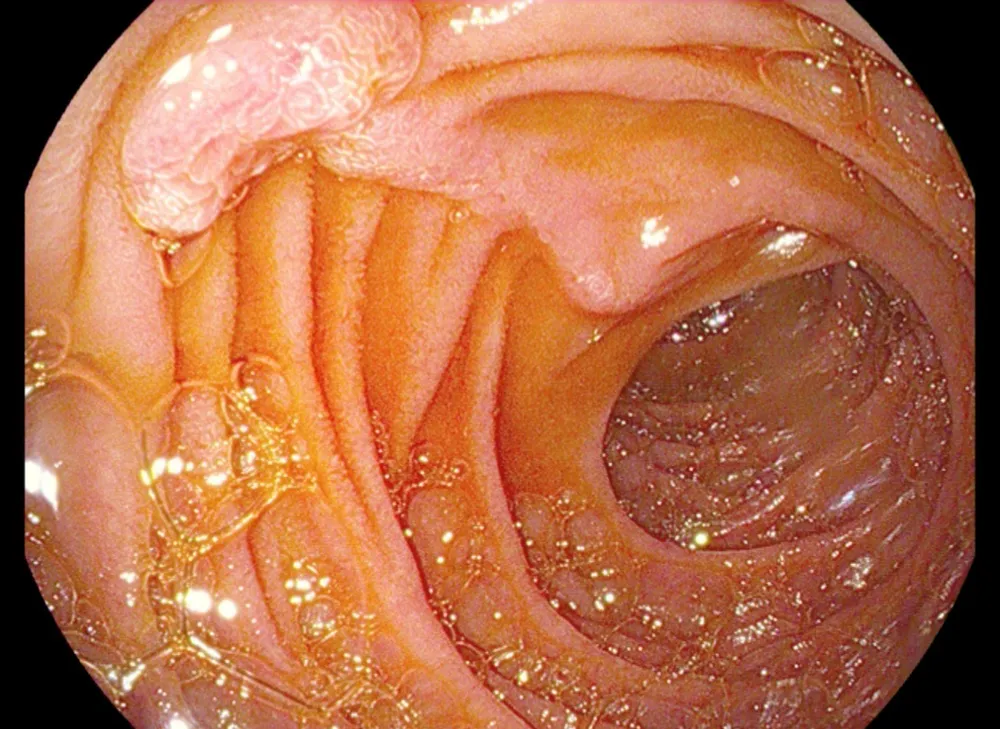
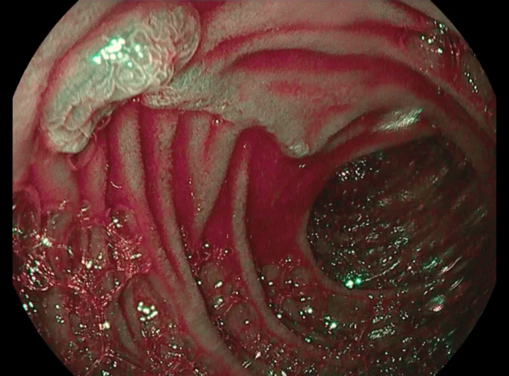
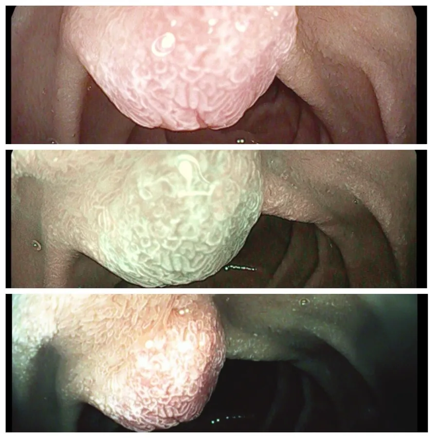

Почему обычная гастроскопия может не увидеть рак?



Бывает так: колоноскопия показала «всё чисто», а через год находят рак. Дело не всегда во враче — обычный белый свет просто не видит часть опасных изменений. Разбираю, как работают NBI и хромоэндоскопия и кому они особенно нужны.
Представьте: вы пришли на колоноскопию. Врач смотрит в монитор — всё чисто. А через год выясняется, что образование было. Как так?
Белый свет не видит плоские изменения: они сливаются со слизистой. Это как искать прозрачную царапину на белом стекле. Поэтому современная эндоскопия использует дополнительные режимы — NBI и хромоэндоскопию.
Что такое NBI и хромоэндоскопия
Хромоэндоскопия — на слизистую через эндоскоп распыляют безопасный краситель. Здоровая ткань окрашивается равномерно, изменённая — иначе. Появляется контраст, и врач лучше видит границы участка.
NBI — узкоспектральная визуализация. Вместо белого света используются узкие пучки, которые подчёркивают сосуды и рельеф. Патологические капилляры становятся отчётливее.
Методы не конкурируют, а дополняют друг друга: их часто применяют последовательно.
Разница проста: обычная эндоскопия видит большинство образований, когда они уже выросли. С NBI специалист видит изменения, когда они только начинаются.


Где это спасает жизнь
Ранние изменения легко пропустить, а именно от них зависит, можно ли удалить опухоль эндоскопически, без операции.
- Пищевод. При длительном курении и алкоголе, пищеводе Барретта, рефлюксной болезни.
- Желудок. Ранний рак, атрофия и кишечная метаплазия.
- Толстая кишка. Плоские и «вдавленные» аденомы — самые коварные для обычной колоноскопии.
- Воспалительные заболевания кишечника. При язвенном колите и болезни Крона важно отличить активное воспаление от опухоли.
Белый свет не способен надёжно распознавать ранние мутации. Плоские образования толстой кишки, предраковые изменения желудка или ранний рак пищевода легко пропустить. А пропустить и дать болезни развиться год — значит потерять окно, когда опухоль ещё можно удалить эндоскопически, без полостной операции.

Кому это действительно нужно
Эти режимы нужны не всем, а пациентам из групп риска:
- Хронический атрофический гастрит, особенно с кишечной метаплазией — контроль раз в 1–3 года.
- Пищевод Барретта — раз в 1–2 года.
- Наследственные синдромы (семейный аденоматозный полипоз, синдром Линча, синдром Пейтца–Егерса) — ежегодно или по схеме наблюдения.
- Возраст 45+ с анемией, потерей веса или изменением стула — однократное диагностическое исследование.
Отдельно — пациенты с инфекцией H. pylori и атрофией желудка: им нужна контрольная гастроскопия после лечения.
Главное преимущество
При обычном свете врач видит сомнительные участки и берёт биопсию «вслепую» из нескольких зон. С NBI и хромоэндоскопией биопсия становится прицельной — точность выше примерно на 40%.
Если обследование ничего опасного не выявило, следующий контроль может быть через 3–5 лет, а не через год. Одна качественная процедура нередко заменяет 3–4 обычные.
Если вы в группе риска, при записи на эндоскопию уточните, использует ли врач NBI и хромоэндоскопию.
Ваш врач Гондусов Д.В. 

Статья носит информационный характер и не заменяет консультацию врача. Не занимайтесь самодиагностикой.